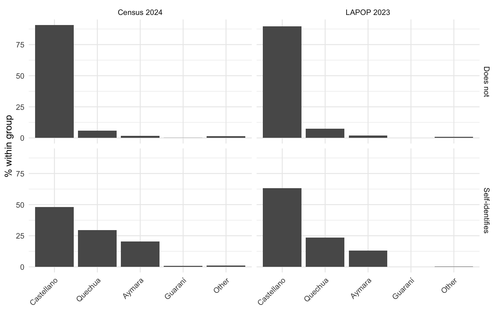

library(arrow)
library(tidyverse)
DATA_DIR <- "../bolivia-data/Censo 2024/base_datos_csv_2024"
CENSO_DIR <- "../bolivia-data/Censo 2024"
lapop <- readRDS("data/lapop_bol_2023.rds")
idioma_cats <- readRDS("data/idioma_cats.rds")
ds <- open_dataset(file.path(DATA_DIR, "Persona_CPV-2024.csv"),
format = "csv", delimiter = ";")Indigenous identity in LAPOP 2023 and the Bolivia Census 2024
Background
The LAPOP AmericasBarometer 2023 and the Bolivia Census 2024 (CPV 2024) both ask about indigenous identity and language, but with different instruments, populations, and sample sizes. This document maps the questions across the two sources and compares the resulting distributions, looking for where they agree and where they diverge.
LAPOP interviewed 1,706 Bolivian adults (18+) face-to-face in 2023. The census enumerated 11.4 million people in 2024, of whom 7.7 million are 18 or older. All census comparisons below restrict to the 18+ population to match LAPOP’s sampling frame.
Setup
The LAPOP identity and language questions
LAPOP asks five questions that touch on indigenous identity and language. They are asked in sequence during the interview, and two of them (boletidnewb, leng4) are conditional on earlier answers.
1. Racial/ethnic self-classification (etid)
¿Usted se considera una persona blanca, mestiza, indígena u originaria, negra, mulata, u otra?
This is a closed-ended question with six response options. It measures perceived racial/ethnic category — not belonging to a specific indigenous people.
lapop |>
filter(!is.na(etid)) |>
count(etid_f) |>
mutate(pct = n / sum(n) * 100) |>
rename(Category = etid_f, N = n, `%` = pct)| Category | N | % |
|---|---|---|
| Blanca | 174 | 11.470007 |
| Mestiza | 1009 | 66.512854 |
| Indígena - originaria | 215 | 14.172709 |
| Negra | 28 | 1.845748 |
| Mulata | 22 | 1.450231 |
| Otra | 69 | 4.548451 |
Two-thirds of respondents identify as mestiza. Only 14% choose indígena-originaria — but as we will see, a much larger share says “yes” to belonging to an indigenous people.
2. Indigenous belonging (boletidnew)
¿Usted se considera perteneciente a algún pueblo indígena u originario o afroboliviano?
This is a yes/no question that is asked of everyone, regardless of their answer to etid. It captures identification with a named indigenous people, which is conceptually broader than the racial self-categorization above.
lapop |>
filter(!is.na(boletidnew)) |>
count(indig_id_f) |>
mutate(pct = n / sum(n) * 100) |>
rename(Response = indig_id_f, N = n, `%` = pct)| Response | N | % |
|---|---|---|
| Sí | 895 | 54.17676 |
| No | 757 | 45.82324 |
54% say yes — nearly four times the share that chose indígena-originaria in etid. This gap is well documented: many Bolivians who consider themselves mestizo in racial terms simultaneously identify as belonging to a Quechua or Aymara people. The cross-tabulation confirms this:
lapop |>
filter(!is.na(etid), !is.na(boletidnew)) |>
count(etid_f, indig_id_f) |>
group_by(etid_f) |>
mutate(pct_row = n / sum(n) * 100) |>
ungroup() |>
select(etid_f, indig_id_f, n, pct_row) |>
pivot_wider(names_from = indig_id_f, values_from = c(n, pct_row)) |>
rename(`Race/ethnicity` = etid_f)| Race/ethnicity | n_Sí | n_No | pct_row_Sí | pct_row_No |
|---|---|---|---|---|
| Blanca | 69 | 99 | 41.07143 | 58.928571 |
| Mestiza | 494 | 494 | 50.00000 | 50.000000 |
| Indígena - originaria | 195 | 20 | 90.69767 | 9.302326 |
| Negra | 17 | 9 | 65.38462 | 34.615385 |
| Mulata | 9 | 12 | 42.85714 | 57.142857 |
| Otra | 37 | 28 | 56.92308 | 43.076923 |
Half of all self-identified mestizos also say they belong to an indigenous people. Even 41% of those who chose blanca do so — suggesting the two questions tap quite different dimensions of identity.
3. Indigenous group (boletidnewb)
¿A cuál de los siguientes pueblos indígenas u originarios o afroboliviano pertenece?
Asked only of those who answered “Sí” to boletidnew. Response options: Quechua, Aymara, Guaraní, Chiquitano, Mojeño, Afroboliviano, Otro, or “no especifica.”
lapop |>
filter(boletidnew == 1, !is.na(boletidnewb)) |>
count(indig_group_f) |>
mutate(pct = n / sum(n) * 100) |>
arrange(desc(n)) |>
rename(Group = indig_group_f, N = n, `%` = pct)| Group | N | % |
|---|---|---|
| Quechua | 400 | 46.7289720 |
| Aymara | 250 | 29.2056075 |
| Otro | 84 | 9.8130841 |
| Guaraní | 42 | 4.9065421 |
| Chiquitano | 36 | 4.2056075 |
| No especifica, indígena nomás | 26 | 3.0373832 |
| Mojeño | 17 | 1.9859813 |
| Afroboliviano | 1 | 0.1168224 |
4. Mother tongue (leng1)
¿Cuál es su lengua materna, es decir, el primer idioma que aprendió en su niñez?
Six response categories: Castellano, Quechua, Aymara, Guaraní, Otro (nativo), Otro extranjero.
lapop |>
filter(!is.na(leng1)) |>
count(leng_materna_f) |>
mutate(pct = n / sum(n) * 100) |>
rename(`Mother tongue` = leng_materna_f, N = n, `%` = pct)| Mother tongue | N | % |
|---|---|---|
| Castellano/español | 1275 | 75.2656434 |
| Quechua | 274 | 16.1747344 |
| Aymara | 133 | 7.8512397 |
| Otro (nativo) | 5 | 0.2951594 |
| Otro extranjero | 7 | 0.4132231 |
5. Parents’ languages (leng4)
¿Qué idiomas hablaban normalmente tus padres en el hogar cuando eras niño/a?
This question captures intergenerational language transmission rather than the respondent’s own language. It has five categories.
lapop |>
filter(!is.na(leng4)) |>
count(leng_padres_f) |>
mutate(pct = n / sum(n) * 100) |>
rename(`Parents' language` = leng_padres_f, N = n, `%` = pct)| Parents’ language | N | % |
|---|---|---|
| Solo castellano | 653 | 38.4796700 |
| Castellano e idioma nativo | 733 | 43.1938715 |
| Sólo idioma nativo | 269 | 15.8515027 |
| Castellano e idioma extranjero | 39 | 2.2981732 |
| Solo idioma extranjero | 3 | 0.1767826 |
59% of respondents grew up in homes where at least one indigenous language was spoken (categories 2 + 3), even though only 25% report an indigenous mother tongue. This gap captures the common pattern of passive bilingualism — parents spoke Quechua or Aymara, but the child acquired Castellano as their first language.
Census 2024 equivalents
The census asks comparable questions but with finer granularity and a much larger population. The main equivalences are:
| Concept | LAPOP variable | Census variable |
|---|---|---|
| Indigenous self-identification | boletidnew |
p32_pueblo_per |
| Indigenous group | boletidnewb (8 options) |
p32_pueblos (58 groups) |
| Mother tongue | leng1 (6 categories) |
idioma_mat (83 languages) |
| Racial/ethnic category | etid |
(not asked) |
| Parents’ language | leng4 |
(not asked) |
Note
The census does not ask about racial self-classification (etid) — this is a LAPOP-only question. Conversely, the census asks about current spoken languages (p331–p333) and language of greatest daily use (idioma_mayor_uso), which LAPOP does not.
Comparison: Indigenous self-identification
census_selfid <- ds |>
filter(p26_edad >= 18, p32_pueblo_per %in% c(1L, 2L)) |>
group_by(p32_pueblo_per) |>
summarise(n = n()) |>
collect() |>
mutate(pct = n / sum(n) * 100)lapop_selfid <- lapop |>
filter(boletidnew %in% c(1, 2)) |>
count(boletidnew) |>
mutate(pct = n / sum(n) * 100,
response = ifelse(boletidnew == 1, "Self-identifies", "Does not"))
comparison_selfid <- tibble(
Response = c("Self-identifies", "Does not"),
`LAPOP %` = c(
lapop_selfid$pct[lapop_selfid$response == "Self-identifies"],
lapop_selfid$pct[lapop_selfid$response == "Does not"]
),
`Census %` = c(
census_selfid$pct[census_selfid$p32_pueblo_per == 1],
census_selfid$pct[census_selfid$p32_pueblo_per == 2]
)
)
comparison_selfid |>
mutate(across(where(is.numeric), \(x) round(x, 1)))| Response | LAPOP % | Census % |
|---|---|---|
| Self-identifies | 54.2 | 42.9 |
| Does not | 45.8 | 57.1 |
LAPOP yields a substantially higher self-identification rate (54% vs 42%) than the census. Several factors likely contribute:
- Question wording: LAPOP asks about belonging to a pueblo (“¿se considera perteneciente…?”), while the census asks whether the respondent self-identifies with one (“¿se autoidentifica…?”). The framing of belonging may be more inclusive.
- Interviewer effects: Face-to-face LAPOP interviews involve a trained interviewer who reads the question aloud, while the census is self-administered or enumerator-assisted with many other questions. Social desirability effects may differ.
- Timing: The LAPOP fieldwork (2023) and the census (2024) are close in time, so temporal changes are unlikely to explain the full gap.
Comparison: Indigenous group
The census p32_pueblos variable distinguishes 58 indigenous groups (plus generic and foreign categories). LAPOP collapses these into 8. To compare, we map the census groups to the LAPOP scheme:
- Census Quechua → LAPOP Quechua
- Census Aymara → LAPOP Aymara
- Census Guaraní → LAPOP Guaraní
- Census Chiquitano → LAPOP Chiquitano
- Census Mojeño + Mojeño Ignaciano + Mojeño Trinitario → LAPOP Mojeño
- Census Afroboliviano → LAPOP Afroboliviano
- Census “Otras declaraciones” → LAPOP “No especifica, indígena nomás”
- All others → LAPOP “Otro”
pueblos_cats <- tribble(
~code, ~label,
1, "Afroboliviano", 2, "Araona", 3, "Aymara",
4, "Ayoreo", 5, "Baure", 6, "Canichana",
7, "Cavineño", 8, "Cayubaba", 9, "Chácobo",
10, "Charka Qhara Qhara", 11, "Chichas", 12, "Chiquitano",
13, "Chuwi", 14, "Ese Ejja", 15, "Guaraní",
16, "Guarasu'we", 17, "Gwarayu", 18, "Itonama",
19, "Jach'a Carangas", 20, "Jalq'a", 21, "Joaquiniano",
22, "Kallawaya", 23, "Killacas", 24, "Leco",
25, "Lípez", 26, "Lupaca", 27, "Machineri",
28, "Maropa", 29, "Mojeño", 30, "Mojeño Ignaciano",
31, "Mojeño Trinitario", 32, "Moré", 33, "Mosetén",
34, "Movima", 35, "Pacahuara", 36, "Pakajaqi",
37, "Paunaca", 38, "Puquina", 39, "Qhapaq Uma Suyu",
40, "Quechua", 41, "Qullas", 42, "Raqaypampa",
43, "Sirionó", 44, "Sora", 45, "Tacana",
46, "Tapiete", 47, "Toromona", 48, "Tsimane'",
49, "Uru-Chipaya", 50, "Weenhayek", 51, "Yaminawa",
52, "Yampara", 53, "Yuqui", 54, "Yurakaré",
55, "Quechua - Aymara", 56, "Más de una descripción",
57, "Otras declaraciones", 58, "Otros pueblos indígenas extranjeros",
98, "No se autoidentifica", 99, "Sin respuesta"
)
census_group <- ds |>
filter(p26_edad >= 18, p32_pueblo_per == 1L) |>
group_by(p32_pueblos) |>
summarise(n = n()) |>
collect() |>
left_join(pueblos_cats, by = c("p32_pueblos" = "code")) |>
mutate(
lapop_group = case_when(
label == "Quechua" ~ "Quechua",
label == "Aymara" ~ "Aymara",
label == "Guaraní" ~ "Guaraní",
label == "Chiquitano" ~ "Chiquitano",
label %in% c("Mojeño", "Mojeño Ignaciano", "Mojeño Trinitario") ~ "Mojeño",
label == "Afroboliviano" ~ "Afroboliviano",
label == "Otras declaraciones" ~ "No especifica",
TRUE ~ "Otro"
)
) |>
group_by(lapop_group) |>
summarise(n = sum(n), .groups = "drop") |>
mutate(pct_census = n / sum(n) * 100)
lapop_group <- lapop |>
filter(boletidnew == 1, !is.na(boletidnewb)) |>
count(indig_group_f) |>
mutate(
pct_lapop = n / sum(n) * 100,
lapop_group = recode(as.character(indig_group_f),
"No especifica, indígena nomás" = "No especifica")
)comparison_group <- lapop_group |>
select(lapop_group, pct_lapop) |>
full_join(census_group |> select(lapop_group, pct_census),
by = "lapop_group") |>
mutate(across(where(is.numeric), \(x) round(x, 1))) |>
arrange(desc(pct_census)) |>
rename(Group = lapop_group, `LAPOP %` = pct_lapop, `Census %` = pct_census)
comparison_group| Group | LAPOP % | Census % |
|---|---|---|
| Quechua | 46.7 | 38.8 |
| Aymara | 29.2 | 38.5 |
| No especifica | 3.0 | 12.1 |
| Otro | 9.8 | 5.2 |
| Guaraní | 4.9 | 2.2 |
| Chiquitano | 4.2 | 2.0 |
| Mojeño | 2.0 | 0.7 |
| Afroboliviano | 0.1 | 0.6 |
The group distributions are broadly similar, with Quechua and Aymara comprising roughly three-quarters of identifiers in both sources. Two notable differences:
- Quechua vs Aymara balance: LAPOP shows Quechua at 47% and Aymara at 29%, while the census has them nearly tied (39% vs 38%). This may reflect LAPOP’s stratified sampling, which groups departments into regional strata rather than sampling each department proportionally.
- “No especifica” / generic identifiers: Both sources show 3–12% using generic terms. The census figure (12%) is higher, likely because its open-ended response allows more vague answers that are subsequently reclassified by INE into the “Otras declaraciones” category.
Comparison: Mother tongue
LAPOP’s leng1 and the census’s idioma_mat both ask about the first language learned in childhood. LAPOP offers 6 categories; the census distinguishes 83 languages. We map the census to LAPOP’s categories:
- Census code 6 (Castellano) → Castellano
- Census code 27 (Quechua) → Quechua
- Census code 2 (Aymara) → Aymara
- Census code 12 (Guaraní) → Guaraní
- Census codes 1–37 (other indigenous) → Otro nativo
- Census codes ≥ 40 (foreign, including unlabeled) → Otro extranjero
census_leng <- ds |>
filter(p26_edad >= 18, !is.na(idioma_mat),
!idioma_mat %in% c(998L, 994L)) |>
group_by(idioma_mat) |>
summarise(n = n()) |>
collect() |>
mutate(
lapop_leng = case_when(
idioma_mat == 6 ~ "Castellano",
idioma_mat == 27 ~ "Quechua",
idioma_mat == 2 ~ "Aymara",
idioma_mat == 12 ~ "Guaraní",
idioma_mat >= 40 ~ "Otro extranjero",
TRUE ~ "Otro nativo"
)
) |>
group_by(lapop_leng) |>
summarise(n = sum(n), .groups = "drop") |>
mutate(pct_census = n / sum(n) * 100)
lapop_leng <- lapop |>
filter(!is.na(leng1)) |>
mutate(
lapop_leng = case_when(
leng1 == 1001 ~ "Castellano",
leng1 == 1002 ~ "Quechua",
leng1 == 1003 ~ "Aymara",
leng1 == 1006 ~ "Guaraní",
leng1 == 1004 ~ "Otro nativo",
leng1 == 1005 ~ "Otro extranjero"
)
) |>
count(lapop_leng) |>
mutate(pct_lapop = n / sum(n) * 100)comparison_leng <- lapop_leng |>
select(lapop_leng, pct_lapop) |>
full_join(census_leng |> select(lapop_leng, pct_census),
by = "lapop_leng") |>
mutate(across(where(is.numeric), \(x) round(x, 1))) |>
arrange(desc(pct_census)) |>
rename(`Mother tongue` = lapop_leng, `LAPOP %` = pct_lapop,
`Census %` = pct_census)
comparison_leng| Mother tongue | LAPOP % | Census % |
|---|---|---|
| Castellano | 75.3 | 72.6 |
| Quechua | 16.2 | 16.0 |
| Aymara | 7.9 | 9.7 |
| Otro extranjero | 0.4 | 0.9 |
| Otro nativo | 0.3 | 0.4 |
| Guaraní | NA | 0.4 |
Mother tongue distributions are remarkably consistent across the two sources, with Castellano at 73–75%, Quechua at 16%, and Aymara at 8–10%. This convergence is reassuring — language is a less ambiguous question than identity, and both instruments capture it similarly.
Cross-tabulation: identity × mother tongue
The most informative comparison is the relationship between indigenous self-identification and mother tongue. In both sources, a substantial share of indigenous identifiers are Castellano mother-tongue speakers — but the two sources differ in degree.
# LAPOP cross-tab
lapop_cross <- lapop |>
filter(boletidnew %in% c(1, 2), !is.na(leng1)) |>
mutate(
identifies = ifelse(boletidnew == 1, "Self-identifies", "Does not"),
madre = case_when(
leng1 == 1001 ~ "Castellano",
leng1 == 1002 ~ "Quechua",
leng1 == 1003 ~ "Aymara",
leng1 == 1006 ~ "Guaraní",
TRUE ~ "Other"
)
) |>
count(identifies, madre) |>
group_by(identifies) |>
mutate(pct = round(n / sum(n) * 100, 1)) |>
ungroup()
# Census cross-tab
census_cross <- ds |>
filter(p26_edad >= 18, p32_pueblo_per %in% c(1L, 2L),
!is.na(idioma_mat), !idioma_mat %in% c(998L, 994L)) |>
group_by(p32_pueblo_per, idioma_mat) |>
summarise(n = n(), .groups = "drop") |>
collect() |>
mutate(
identifies = ifelse(p32_pueblo_per == 1, "Self-identifies", "Does not"),
madre = case_when(
idioma_mat == 6 ~ "Castellano",
idioma_mat == 27 ~ "Quechua",
idioma_mat == 2 ~ "Aymara",
idioma_mat == 12 ~ "Guaraní",
TRUE ~ "Other"
)
) |>
group_by(identifies, madre) |>
summarise(n = sum(n), .groups = "drop") |>
group_by(identifies) |>
mutate(pct = round(n / sum(n) * 100, 1)) |>
ungroup()lapop_cross |>
select(identifies, madre, pct) |>
pivot_wider(names_from = madre, values_from = pct, values_fill = 0) |>
rename(`Identification status` = identifies)| Identification status | Aymara | Castellano | Other | Quechua |
|---|---|---|---|---|
| Does not | 2 | 89.6 | 0.9 | 7.5 |
| Self-identifies | 13 | 63.1 | 0.4 | 23.5 |
census_cross |>
select(identifies, madre, pct) |>
pivot_wider(names_from = madre, values_from = pct, values_fill = 0) |>
rename(`Identification status` = identifies)| Identification status | Aymara | Castellano | Guaraní | Other | Quechua |
|---|---|---|---|---|---|
| Does not | 1.8 | 90.7 | 0.1 | 1.5 | 5.9 |
| Self-identifies | 20.3 | 48.2 | 0.9 | 1.0 | 29.6 |
bind_rows(
lapop_cross |> mutate(source = "LAPOP 2023"),
census_cross |> mutate(source = "Census 2024")
) |>
mutate(
madre = factor(madre, levels = c("Castellano", "Quechua", "Aymara",
"Guaraní", "Other")),
panel = paste(source, identifies, sep = "\n")
) |>
ggplot(aes(x = madre, y = pct)) +
geom_col() +
facet_grid(identifies ~ source) +
labs(x = NULL, y = "% within group") +
theme_minimal() +
theme(axis.text.x = element_text(angle = 45, hjust = 1))
The cross-tabulations reveal two key patterns:
Castellano dominance among identifiers: In LAPOP, 63% of indigenous identifiers report Castellano as their mother tongue. In the census, the figure is even higher at 48% — but note that the census captures many more indigenous-language speakers overall (20% Aymara + 30% Quechua in the census vs 13% + 23% in LAPOP among identifiers).
Non-identifiers with indigenous mother tongues: In both sources, roughly 8–10% of people who do not self-identify as indigenous report an indigenous mother tongue (mostly Quechua). In the census this amounts to roughly 330,000 adults — people who grew up speaking Quechua or Aymara but do not claim indigenous belonging.
Summary
| Measure | LAPOP 2023 | Census 2024 (18+) | Gap |
|---|---|---|---|
| Indigenous self-identification | 54.2% | 42.2% | +12 pp |
| Quechua mother tongue | 16.2% | 16.0% | ≈0 |
| Aymara mother tongue | 7.9% | 9.6% | −1.7 pp |
| Castellano mother tongue | 75.3% | 72.6% | +2.7 pp |
| Castellano among identifiers | 63.1% | 48.2% | +15 pp |
The largest discrepancy between sources is in indigenous self-identification (+12 pp in LAPOP). Language distributions, by contrast, are strikingly consistent. This suggests that the identity gap is driven primarily by differences in question wording and survey context rather than by sampling bias — if LAPOP’s sample were simply over-representing indigenous populations, we would expect to see higher indigenous-language rates as well.
The high rate of Castellano mother-tongue speakers among indigenous identifiers in both sources (48–63%) underscores a point central to the broader census analysis: indigenous identity in Bolivia is increasingly decoupled from indigenous language use. The LAPOP leng4 variable reinforces this — 59% of respondents report that their parents spoke an indigenous language at home, far exceeding the 25% who learned one as their own mother tongue. ```